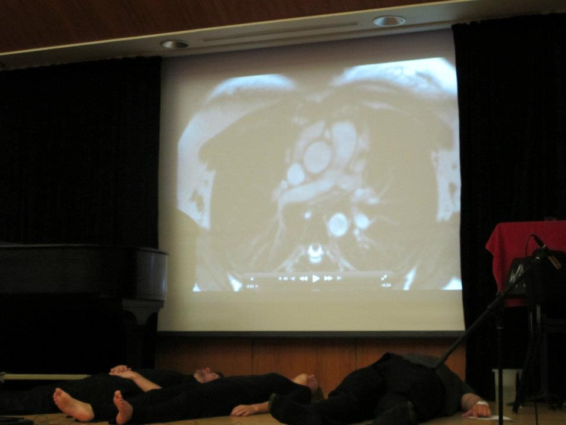
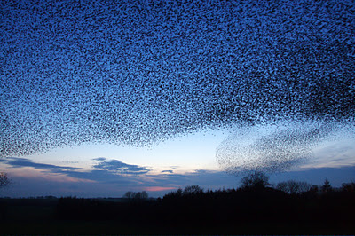
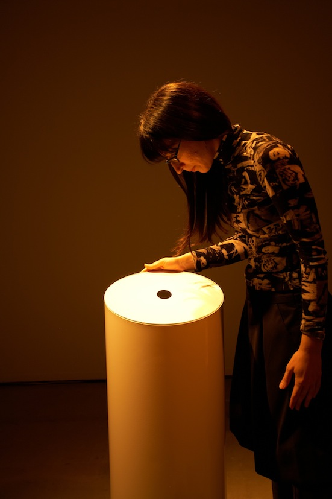

people doing strange things with electricity
The first dorkbot-nyc meeting of the 940th season took place at 7pm on Wednesday, September 4th, 2013 at Prentis Hall in Harlem.
It featured the vector vortex coronagraph output of:
 Valeria Jonard: Body Sound
Body Sound is an ongoing idea about listening to sound using the body as the producer, as well as the receptor. Heartbeat, breathing and intestinal sounds are the aural material, while the touch and the sight accompany the ears as sound receptors.
http://www.valeriajonard.com Nolan Lem: Micropolyphony and Swarm Behavior
Nolan Lem is an MFA candidate in Sound Arts at Columbia University. His recent projects involve the use of micropolyphony as a compositional device to model swarm behavior and crowd noise. Applying these concepts to a large, multi-channel format, these sound masses could be realized to create autonomous structures that shape the spatialized contours of high density swarms.
http://www.nolanlem.com Carla Cisno: Densified - Rarefied
Carla Cisno is an Italian researcher and sound artist currently based in NYC, where she is a MFA candidate at Columbia University. Interested in the expressive use of new technologies and deeply concerned with the experience and occupation of Space and Time, she works essentially on site-responsive and interactive sound environments. In the form of evolutionary surfaces, resonant volumes and sensitive devices, she stages durations, variable, temporalized, non-homogeneous environmental forms that constitute a gestural and situational vocabulary. Aiming at establishing new opportunities for perception, her work suggests a flexible and modulable relationship to space, which becomes an arena of continuous sensorial exchange and a plural, performative context.
http://surfacesvolumesdevices.net
NEXT MEETING: 06 Nov 2013